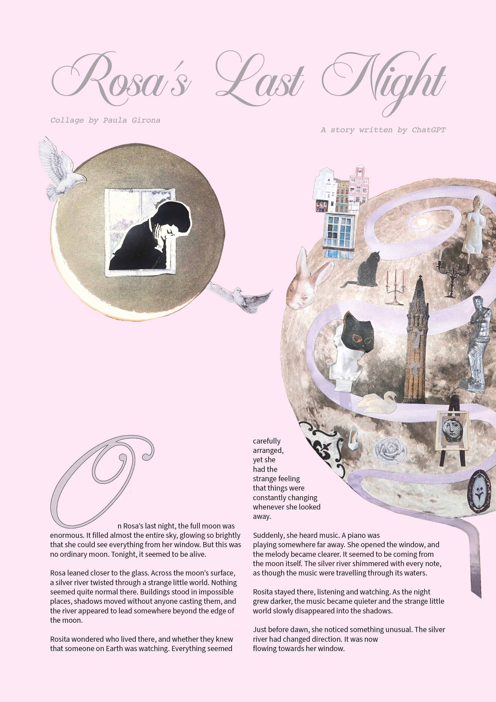
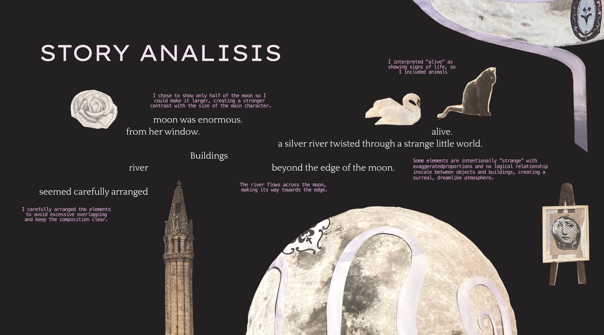
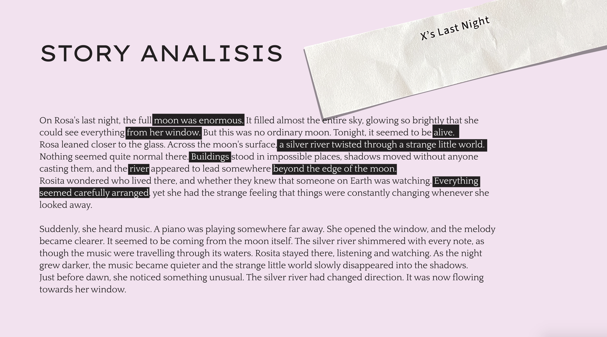
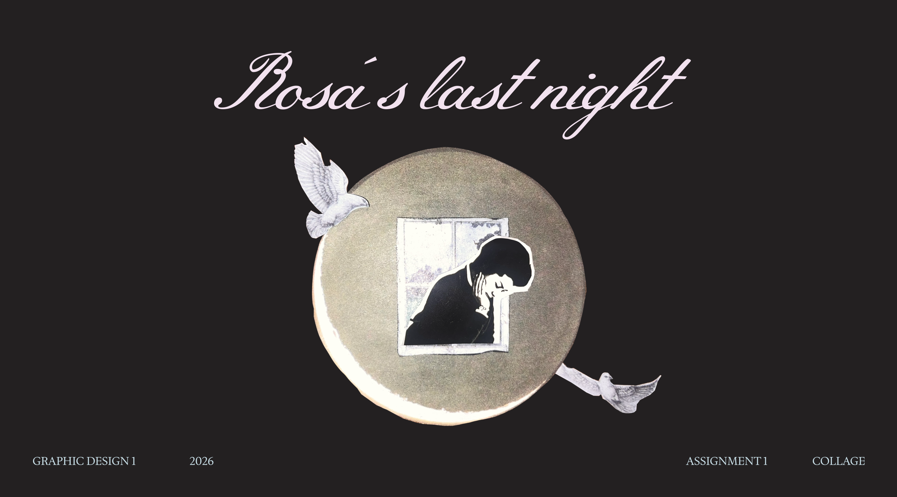

Rosas last Night
2026
Graphic Design
Editorial / Collage / Visual Composition / Art Direction
A visual exploration through layered imagery, texture, and composition.
Role: Designer & Art Director.
OVERVIEW
Rosa's Last Night is a traditional collage project inspired by my grandmother, who became the protagonist of a whimsical story about a mysterious world hidden inside the moon.
The challenge was to create the entire composition using only found materials, such as magazines and discarded paper. No drawing, printing or digitally created elements were allowed.
THE IDEA
I wanted to create something surreal and dreamlike, a world where ordinary objects exist in extraordinary places. The story follows Rosa as she discovers an enormous moon containing a strange little universe, where a silver river flows between buildings, animals and unexpected objects.
I played with exaggerated proportions and unusual combinations to create a sense of mystery, as if everything belonged together even though nothing quite made sense.
BRINGING THE CONCEPT TO LIFE
Working entirely with physical materials was one of the most interesting parts of this project. I spent time searching through magazines and collecting images, textures and pieces of paper that could become part of my imaginary world.
Every element was cut out and arranged by hand, experimenting with scale, composition and unexpected visual relationships. The only personal photograph I included was one of my grandmother, connecting the fictional story to someone very real to me.
FINAL RESULT
The final collage brings together fragments from completely different sources to create one surreal, whimsical composition.
What I especially enjoyed was the limitation of working without digital tools. Instead of creating exactly what I imagined, I had to discover possibilities within the materials I could find.
It reminded me that creativity isn't always about having unlimited possibilities. Sometimes, the most unexpected ideas come from working with what you already have.



